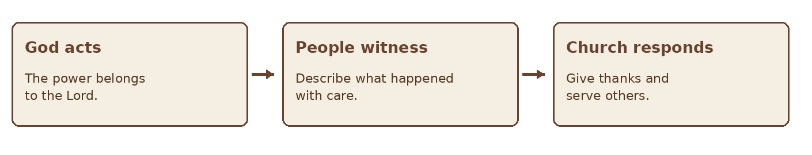

GIFTS OF THE HOLY SPIRIT · BIBLE STUDY
The Gift of the Working of Miracles
A Bible study on God’s power, signs, and faithful witness
STUDY FIVE • MIRACLES
“To another the working of miracles.” — 1 Corinthians 12:10
Paul names the working of miracles among the Spirit’s manifestations for the common good. This study examines the brief reference in 1 Corinthians 12 alongside accounts of extraordinary acts in the New Testament. It asks what those accounts reveal about God, how the church should respond to a claimed miracle, and why truthfulness, love, and humility matter as much as amazement.
Scripture at a Glance
| Passage | Contribution to the study |
|---|---|
| 1 Corinthians 12:4–11, 27–30 | The Spirit distributes diverse gifts; Paul names the working of miracles and asks whether all work them. |
| Acts 3:1–16 | Peter redirects attention from human power to Jesus after a man is healed. |
| Acts 14:8–18 | Paul and Barnabas reject worship after a healing is misunderstood by a crowd. |
| Acts 19:11–20 | Luke attributes extraordinary miracles to God and contrasts them with attempted misuse of Jesus’ name. |
| Hebrews 2:3–4 | Signs and wonders accompany testimony to the message of salvation. |
| 1 Corinthians 13:1–3; 14:26 | Love and the building up of the church govern the exercise of gifts. |
1 What Does Paul Mean
The phrase in 1 Corinthians 12:10 is translated “working of miracles” or “working of powers.” Paul names it but does not provide a definition, a list of eligible events, or instructions for producing one. He distinguishes it from gifts of healing in his list, although a healing may itself be experienced as miraculous. The text does not tell us that the two categories never overlap.
The surrounding passage supplies a purpose and a limit. The manifestation is given by the Spirit for the common good; different members receive different gifts. Paul’s questions in 12:29–30 expect that not everyone has the same function. No person owns God’s power or can summon a miracle at will.

Figure 1 Keep attention on God and the people served
2 Miracles Point Beyond the Event
In Acts 3, a man who could not walk is healed. Peter immediately rejects the idea that his own power or piety produced the result and speaks about Jesus. In Acts 14, a crowd mistakes Paul and Barnabas for gods after a healing. The apostles resist that praise and direct the people toward the living God. An extraordinary event can attract attention and also be misunderstood.
Hebrews 2:3–4 describes God bearing witness to the message of salvation through signs, wonders, and various miracles. These passages give miracles a purpose beyond spectacle. They may prompt gratitude, witness, and obedience, but they should not become a substitute for the message of Christ.
| Response to an event | Question to ask |
|---|---|
| Attention | Who is receiving the credit? |
| Meaning | What claim is being made about God or the gospel? |
| Care | How are the affected people being treated? |
| Truth | What has actually been established? |
3 What Accounts in Acts Teach
Acts 19 says that God did extraordinary miracles through Paul. The same passage recounts people attempting to use the name of Jesus without a genuine relationship to him; the narrative does not present a repeatable technique involving objects or words. We should not turn a description of an unusual event into a method or a commodity.
The book of Acts records particular moments in the spread of the gospel. It is valuable to study these accounts while distinguishing what Luke reports from what he commands every church to do. Christians differ on how frequently such works should be expected today. The difference should be discussed with Scripture, honesty, and care rather than exaggerated claims.
Figure 2 Read a miracle account in context
4 A Miracle Is Not a Measure of Worth
The presence of an extraordinary event does not establish that the speaker is above correction. Nor does the absence of one mean that a church, a sick person, or a person praying lacks faith. Paul’s body image in 1 Corinthians 12 values each member and each form of service. First Corinthians 13 places love above impressive gifts.
Prayer, teaching, hospitality, generosity, and sustained care remain meaningful when no extraordinary event is visible. The church should not neglect ordinary responsibilities while waiting for a dramatic intervention.
5 Test a Claimed Miracle
When someone reports a miracle, begin by hearing the account accurately. Distinguish what was observed, what is independently known, and what is inferred about its cause. Give the person control over whether their story is shared. A report about a health condition should not be described as medically verified without appropriate confirmation.
| Question | Responsible practice |
|---|---|
| What happened? | Record the sequence and the person’s own description. |
| What is known? | Separate observation from interpretation and unverified detail. |
| May this be shared? | Ask permission and protect private information. |
| What fruit follows? | Look for gratitude, truth, love, and service rather than personal status. |
| Who can help assess it? | Invite appropriate leaders and relevant expertise. |
What fruit follows? Look for gratitude, truth, love, and service rather than personal status. Who can help assess it? Invite appropriate leaders and relevant expertise. Testing is not hostility toward God’s work. It honors truth and protects people. If a report changes as further information arrives, correct it openly. Do not pressure someone to claim an event occurred or to abandon ordinary care.
6 Resist Spectacle and Misuse
An event should not be used to demand money, claim unquestionable authority, or manipulate a vulnerable person. Acts 14 shows how quickly observers may direct honor to the wrong people. The responsible response of the apostles was to refuse that honor.
Figure 3 A healthy response to an extraordinary report
Avoid both premature certainty and a reflexive dismissal. A church can pray with hope, examine claims carefully, and leave questions open where evidence is incomplete. God’s power is not diminished by accurate speech.
7 A Practical Event and Response Journal
Use these prompts when an extraordinary event is reported. Record only details you have permission to retain or share.
| Prompt | Record |
|---|---|
| What was observed? | Describe events and timing without adding a cause. |
| Who witnessed it? | Identify firsthand and secondhand accounts separately. |
| What remains unknown? | List gaps, alternative explanations, and needed confirmation. |
| Prompt | Record |
|---|---|
| What does Scripture say? | Read relevant passages in their context. |
| Who has consented? | Protect identities and personal information. |
| What response serves people? | Pray, give thanks, offer care, and speak truthfully. |
| What changed later? | Update the account if further facts emerge. |
Reflection and Discussion
- Why did Peter and Paul redirect attention after extraordinary events?
- How can we remain open to God’s power while testing a particular report?
- What harm can come from exaggerating or publicizing a person’s story without consent?
- What acts of ordinary service should continue regardless of whether a miracle occurs?
A Prayer for Humility and Truth
Father, You are powerful and good. Teach us to pray with hope and to receive Your work with gratitude. If something extraordinary happens among us, help us speak accurately, protect the people involved, and direct all honor to Jesus Christ. Guard us from pride, pressure, and spectacle. Build up Your church in truth and love. Amen.
Further Study
Read 1 Corinthians 12–14 as a unit. Then read Acts 3:1–16, Acts 14:8–18, Acts 19:11–20, and Hebrews 2:1–4 in context. For each account, identify the event, the explanation given by the biblical writer, and the response of the people involved.